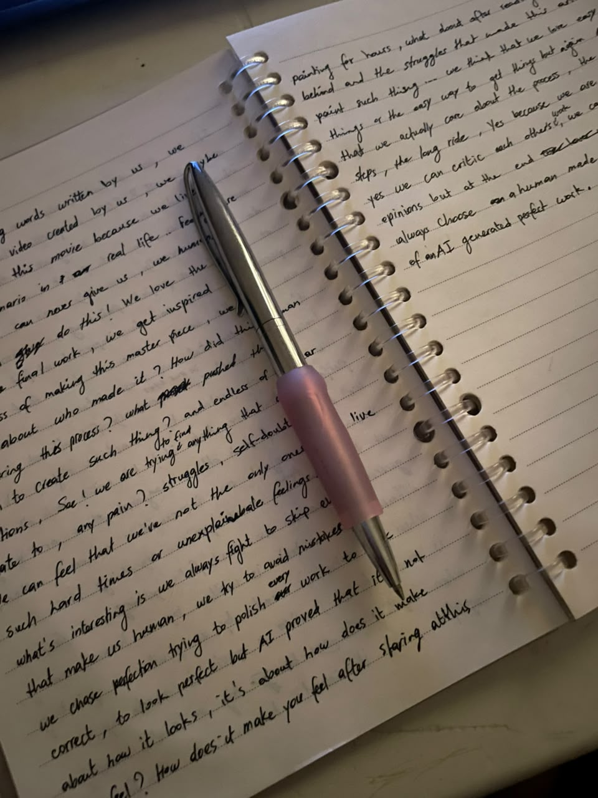

If we love perfection, why do we hate everything made by AI? It's a question that keeps popping up into my mind. As human beings, we are trying hard to avoid mistakes, to look perfect. We are trying to do things correctly, smoothly. Yet, if AI gave us or generated a perfect painting, an amazing paragraph, we can be impressed at first, but once we know the source, once we know that actually it's AI-generated, we lose interest. We immediately lose that spark in our eyes. We naturally feel distant because we cannot relate to a machine, right? It's perfect, but we hate it.
We criticize each other, we make fun of each other's beginner phase or trying season, we project our insecurities on each other. At the same time, we can't praise anything AI generates, because we can't feel anything. It feels different when a book is written by a human being, when music is made by us, when a painting is made by us, when a movie is made by us, when anything, big or small, is imperfect but it sounds human. We can feel something reading words written by us. We can relate to a video created by us. We maybe can understand this movie because we lived the same scenario in real life…
Feelings are something that AI can never give us. We humans, only us, can do this. We love the story behind the final work, we get inspired by the process of making this masterpiece, we get curious about who made it, how did this human feel during this process, what pushed this human to create such a thing, and endless similar questions. See, we are trying to find anything that we can relate to, any pain, struggles, self-doubt, so we can feel that we are not the only ones who live through such hard times or unexplainable feelings…

And what's interesting is we always fight to skip everything that makes us human. We try to avoid mistakes, we chase perfection, trying to polish every work to look correct, to look perfect. But AI proved that it's not about how it looks, it's about how it makes you feel, how it makes you feel about staring at this painting for hours, what about after reading the story behind and the struggles that made this artist paint such a thing…
We think that we love easy things or an easy way to get things, but again, AI proves that we actually care about the process, the messy steps, the long ride, because we are humans. Yes, we can criticize each other's work, we can have different opinions, but at the end, we will always choose a human-made imperfect work instead of AI-generated perfect work.